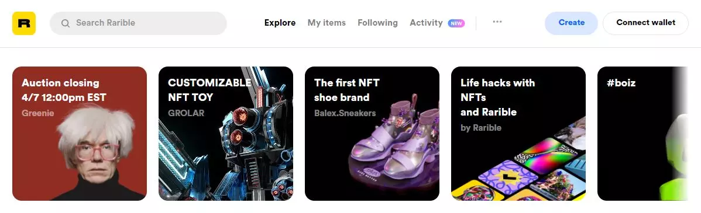

Rarible
Rarible es una de esas colecciones de arte online donde podemos buscar lo que nos interese, podemos comprar NFTs… Lo primero que tienes que hacer es conectar un monedero. Al crear una cuenta debes conectar un wallet de criptomonedas compatible como WalletConnect, Fortmatic, Torus, CoinbaseWallet o MyEtherWallet. Una vez que tengas criptomonedas conectadas vía tu monedero, podrás empezar a pujar con una cuenta. Puedes encontrar lo que quieras o incluso seguir a artistas que te parecen interesantes, por ejemplo. Verás colecciones de moda, populares o podrás explorar por categoría: fotografía, arte, música, juegos, etc.
